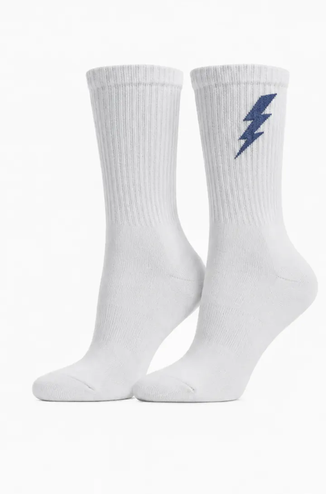
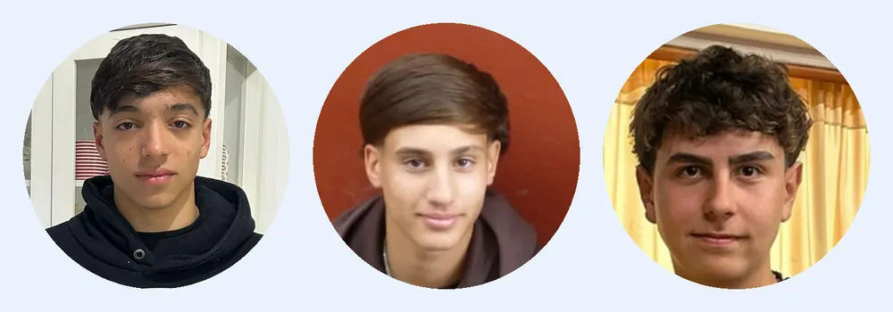

Medias inteligentes
Medias inteligentes de recuperación muscular
Recuperá hoy. Rendí mañana.
NextStep es una media deportiva que combina compresión automática, vibración y control de temperatura en una sola prenda. Te la ponés después de entrenar o de jugar, mientras descansás, y tus músculos llegan mejor a la próxima sesión.

Qué hacen las medias NextStep
Las medias de compresión deportivas comunes solo aprietan. NextStep suma dos tecnologías más para acelerar la recuperación muscular después de entrenar, sin aparatos aparte ni cables.
Compresión automática
Aprieta de forma suave y progresiva desde el tobillo hacia arriba para ayudar a que la sangre circule y baje la hinchazón.
Vibración
Un masaje suave que ayuda a soltar la tensión del gemelo y del pie después del esfuerzo.
Control de temperatura
Da calor o frío según lo que necesite el músculo, para que te sientas mejor al día siguiente.
¿Quiénes somos?

En NextStep somos tres socios de 6.° año de Brick Towers College que entrenamos seguido (gimnasio y fútbol). Nos cansamos de llegar a la próxima sesión sin haber recuperado los músculos y de que la ropa deportiva que usábamos no ayudara en nada. Así nació NextStep: unas medias inteligentes de recuperación muscular que combinan compresión automática, vibración y control de temperatura en una sola prenda cómoda y minimalista.
Somos una empresa argentina en crecimiento y nuestro objetivo es simple: que cualquier persona que entrene pueda recuperarse mejor sin gastar en aparatos caros. Si querés saber más, mirá cómo funcionan las medias inteligentes.
¿Cómo funciona?
Usás NextStep después de entrenar, mientras descansás en tu casa. La media se ajusta sola, combina compresión, vibración y temperatura durante la sesión de recuperación y la podés usar todos los días.
La recuperación muscular después de entrenar es tan importante como el entrenamiento: es lo que te deja volver a entrenar sin dolor. Por eso la diseñamos para usarla en la vida diaria, como cualquier otra media deportiva.


Por qué la recuperación importa
Moverse seguido es bueno para la salud: lo dicen las recomendaciones de la OMS sobre actividad física. Pero para sostener el entrenamiento en el tiempo, el cuerpo necesita recuperarse.
La compresión no es un invento nuestro: un meta-análisis sobre prendas de compresión y recuperación muscular publicado en el British Journal of Sports Medicine concluye que ayudan a recuperarse del daño muscular después del ejercicio. NextStep toma esa base y le suma vibración y temperatura.
Preguntas frecuentes
¿Cuándo se usan las medias NextStep?
Después de entrenar o de jugar, mientras descansás. No son para usar durante el ejercicio.
¿En qué se diferencian de las medias de compresión comunes?
Las comunes solo comprimen. NextStep suma vibración y control de temperatura en la misma prenda.
¿Dónde se van a vender?
Primero en la Ciudad Autónoma de Buenos Aires y en el Gran Buenos Aires, por la web y en gimnasios y clubes.
¿Cómo me entero del lanzamiento?
Anotándote en la lista de espera. Te avisamos antes que a nadie.